Chapter 3 igraph를 이용한 네트워크
rm(list = ls()) # 지금까지 생성한 모든 개체를 메모리에서 제거
library(igraph) # igraph 패키지 불러오기##
## Attaching package: 'igraph'## The following objects are masked from 'package:stats':
##
## decompose, spectrum## The following object is masked from 'package:base':
##
## union3.1 네트워크 생성(Create networks)
다음의 코드는 세 개의 에지(edge)를 갖는 무방향 그래프(undirected graph)를 생성한다. 정점(vertex, 노드) 안의 숫자들은 정점의 ID로 해석되며, 따라서 에지들은 1–>2, 2–>3, 3–>1 이다.
g1 <- graph( edges=c(1,2, 2,3, 3, 1), n=3, directed=F )
plot(g1) # 단순한 네트워크 그림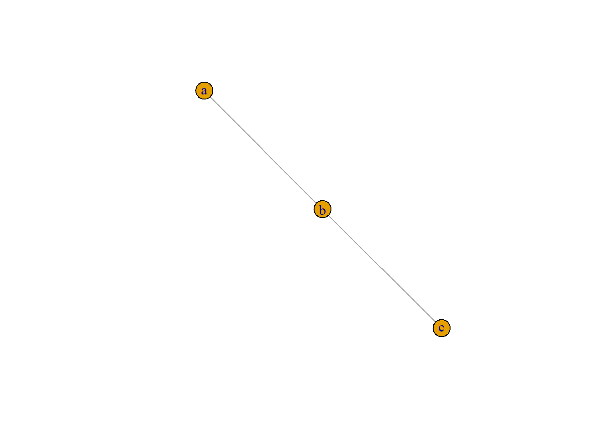
class(g1)## [1] "igraph"g1## IGRAPH 90110f8 U--- 3 3 --
## + edges from 90110f8:
## [1] 1--2 2--3 1--3# 10개의 노드와 기본 값으로 방향성 네트워크
g2 <- graph( edges=c(1,2, 2,3, 3, 1), n=10 )
plot(g2)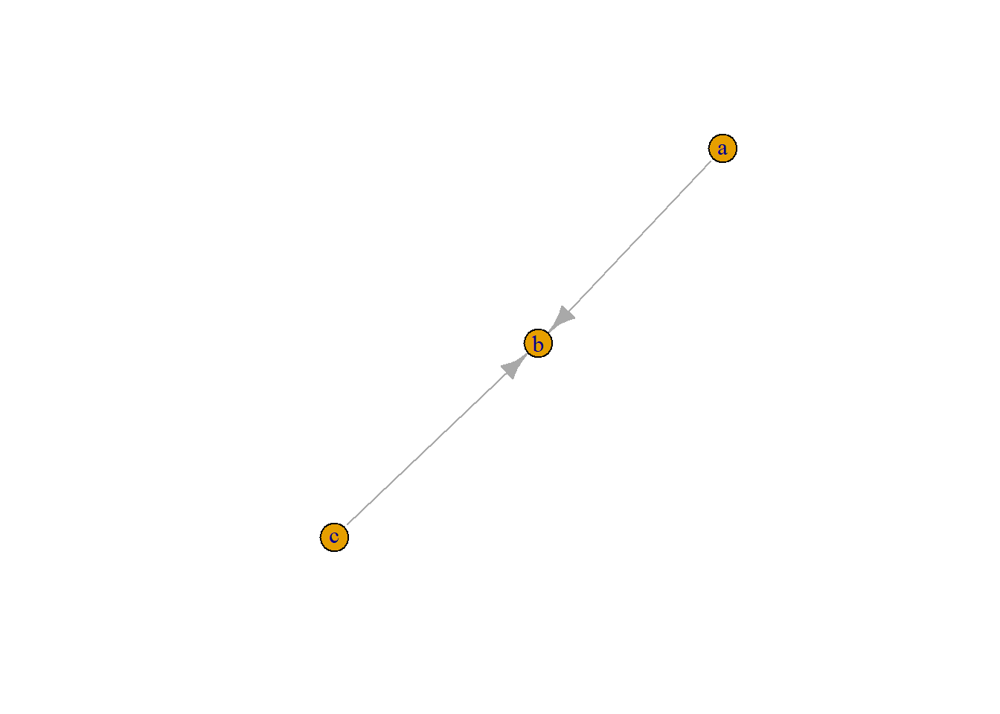
g2## IGRAPH 90127fd D--- 10 3 --
## + edges from 90127fd:
## [1] 1->2 2->3 3->1g3 <- graph( c("John", "Jim", "Jim", "Jill", "Jill", "John")) # named vertices
plot(g3)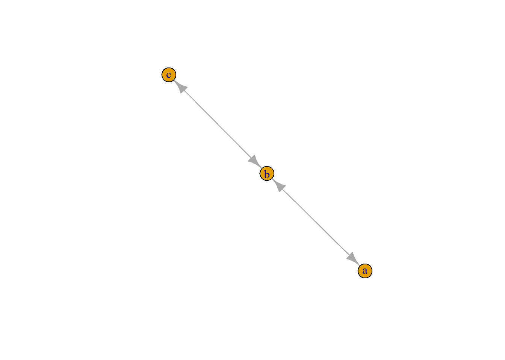
g3## IGRAPH 901c1d6 DN-- 3 3 --
## + attr: name (v/c)
## + edges from 901c1d6 (vertex names):
## [1] John->Jim Jim ->Jill Jill->Johng4 <- graph( c("John", "Jim", "Jim", "Jack", "Jim", "Jack", "John", "John"),
isolates=c("Jesse", "Janis", "Jennifer", "Justin") )
# In named graphs we can specify isolates by providing a list of their names.
plot(g4, edge.arrow.size=.5, vertex.color="gold", vertex.size=15,
vertex.frame.color="gray", vertex.label.color="black",
vertex.label.cex=0.8, vertex.label.dist=2, edge.curved=0.2) 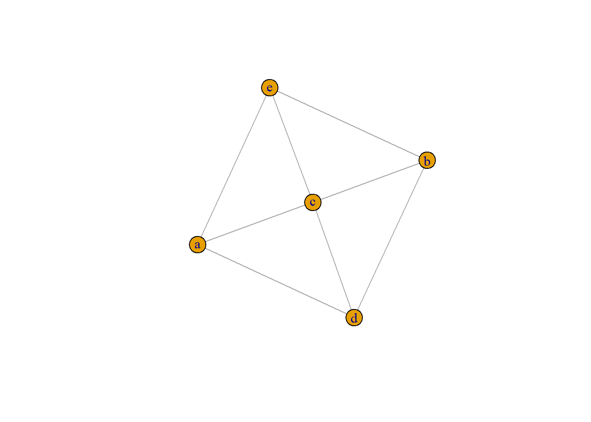
소규모의 그래프는 무방향 연결을 나타내는-, 왼쪽과 오른쪽을 나타내는 방향성 표현을 위한 +- 또는 -+ , 대칭형 연결을 위한 ++ 그리고 정점의 집합을 위한 “:” 등의 설명으로 생성할 수 있다.
plot(graph_from_literal(a---b, b---c)) # -의 갯수는 문제가 안됨
plot(graph_from_literal(a--+b, b+--c))
plot(graph_from_literal(a+-+b, b+-+c))
plot(graph_from_literal(a:b:c---c:d:e))
gl <- graph_from_literal(a-b-c-d-e-f, a-g-h-b, h-e:f:i, j)
plot(gl)
3.2 에지(Edge), 정점(vertex), 그리고 네트워크 속성(network attributes)
정점과 에지 접근 :
E(g4) # 개체 g4의 에지들## + 4/4 edges from 9021dcb (vertex names):
## [1] John->Jim Jim ->Jack Jim ->Jack John->JohnV(g4) # 개체 g4의 정점들## + 7/7 vertices, named, from 9021dcb:
## [1] John Jim Jack Jesse Janis Jennifer Justin또한 네트워크 행렬(network matrix)을 직접 검토할 수 있다 :
g4[]## 7 x 7 sparse Matrix of class "dgCMatrix"
## John Jim Jack Jesse Janis Jennifer Justin
## John 1 1 . . . . .
## Jim . . 2 . . . .
## Jack . . . . . . .
## Jesse . . . . . . .
## Janis . . . . . . .
## Jennifer . . . . . . .
## Justin . . . . . . .g4[1,]## John Jim Jack Jesse Janis Jennifer Justin
## 1 1 0 0 0 0 0네트워크 속성, 정점들 그리고 에지들 추가하기 :
V(g4)$name # 네트워크 생성시 자동으로 생성됨.## [1] "John" "Jim" "Jack" "Jesse" "Janis" "Jennifer" "Justin"V(g4)$gender <- c("male", "male", "male", "male", "female", "female", "male")
E(g4)$type <- "email" # 에지의 속성 모든 에지에 "email" 할당
E(g4)$weight <- 10 # 에지의 가중치, 모든 기존 에지에 10으로 설정속성의 확인 :
edge_attr(g4) # 에지의 속성 확인## $type
## [1] "email" "email" "email" "email"
##
## $weight
## [1] 10 10 10 10vertex_attr(g4) # 정점의 속성 확인## $name
## [1] "John" "Jim" "Jack" "Jesse" "Janis" "Jennifer" "Justin"
##
## $gender
## [1] "male" "male" "male" "male" "female" "female" "male"graph_attr(g4) # 네트워크 속성 확인## named list()속성 설정 방법 (비슷하게 set_edge_attr(), set_vertex_attr(), 등을 사용) :
g4 <- set_graph_attr(g4, "name", "Email Network")
g4 <- set_graph_attr(g4, "something", "A thing")
graph_attr_names(g4)## [1] "name" "something"graph_attr(g4, "name")## [1] "Email Network"graph_attr(g4)## $name
## [1] "Email Network"
##
## $something
## [1] "A thing"g4 <- delete_graph_attr(g4, "something")
graph_attr(g4)## $name
## [1] "Email Network"plot(g4, edge.arrow.size=.5, vertex.label.color="black", vertex.label.dist=1.5,
vertex.color=c( "pink", "skyblue")[1+(V(g4)$gender=="male")] ) 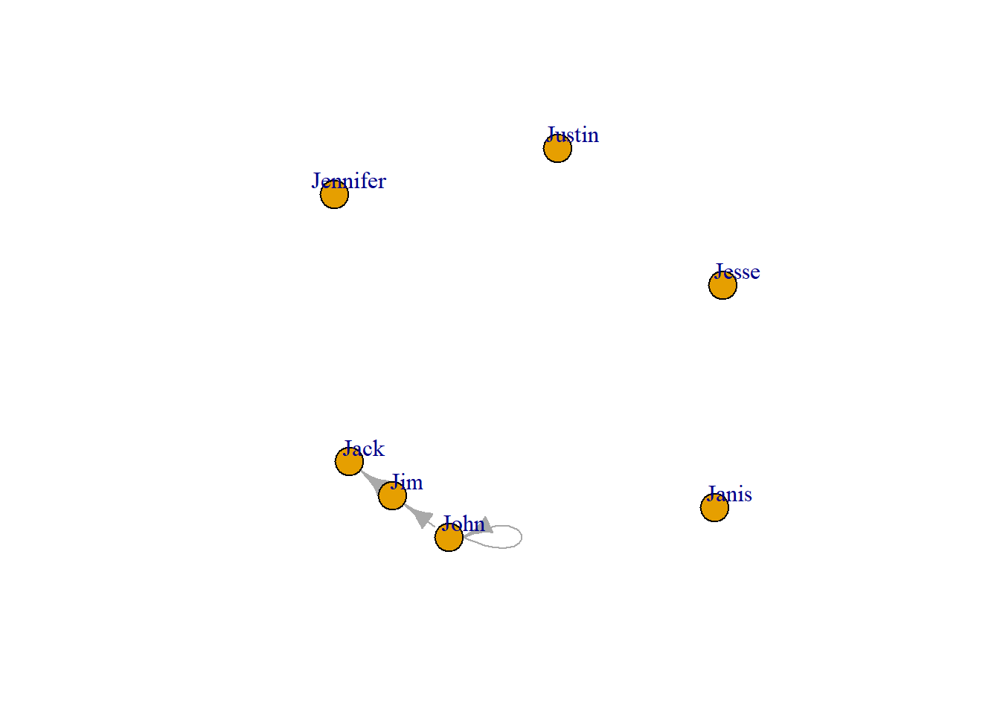
그래프 g4는 Jim에서 Jack으로 두 개의 에지를 가지고 있으며, John은 자신에게로 향하는 루프(loop)를 가지고 있다. 그래프에서 루프를 제거하고 같은 노드 사이의 복수개의 에지들을 제거하여 그래프를 단순화할 수 있다.
에지 속성들이 어떻게 결합되는지를 나타내기 위해 edge.attr.comb 을 사용한다. 가능한 옵션은 sum, mean, prod (product), min, max, first/last (첫/마지막 에지 속성 선택) 등을 포함한다. “type = ignore” 옵션은 속성이 무시되거나 제거되어야 함을 의미한다.
g4s <- simplify( g4, remove.multiple = T, remove.loops = F,
edge.attr.comb=c(weight="sum", type="ignore") )
plot(g4s, vertex.label.dist=1.5)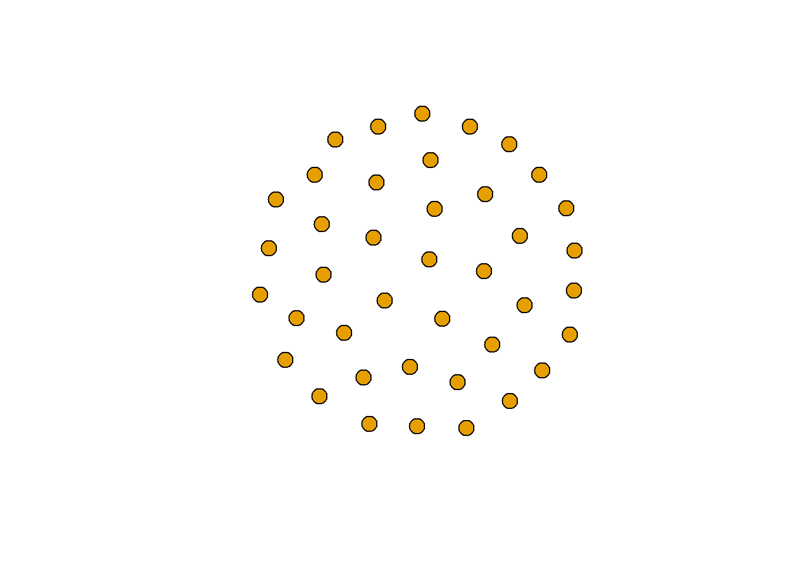
g4s## IGRAPH 9130c66 DNW- 7 3 -- Email Network
## + attr: name (g/c), name (v/c), gender (v/c), weight (e/n)
## + edges from 9130c66 (vertex names):
## [1] John->John John->Jim Jim ->Jackigraph 개체의 설명은 4 가지 글자로 시작한다.
D또는U: 방향성 또는 무방향성 그래프N: 명명된 그래프(노드가name속성을 가짐)W: 가중 그래프(에지들이weight속성을 가짐)B: 이분할 (bipartite; two-mode) 그래프(노드들이type속성을 가짐)
그래프에서 (7 5) 와 같은 두 숫자는 노드와 에지의 수를 의미한다. 설명은 또한 노드와 에지의 속성을 나열한다. 예를 들어,
(g/c)- 그래프 수준의 문자 속성(v/c)- 정점 수준의 문자 속성(e/n)- 에지 수준의 숫자 속성
3.3 특수 그래프(Specific graphs)와 그래프 모델(graph models)
빈 그래프(Empty graph)
eg <- make_empty_graph(40)
plot(eg, vertex.size=10, vertex.label=NA)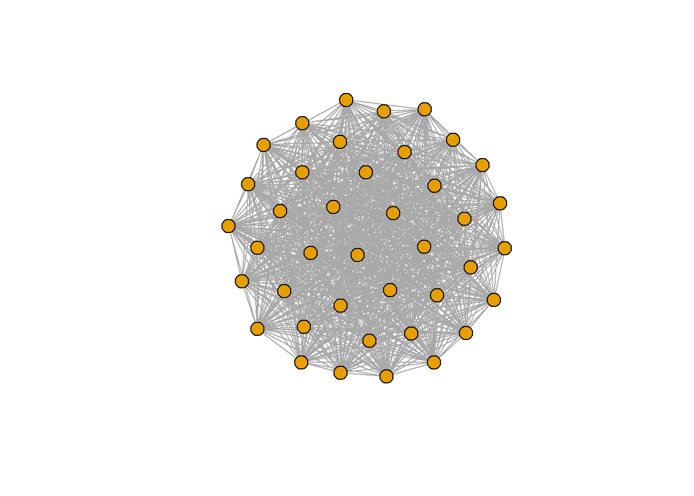
완전 그래프(Full graph)
fg <- make_full_graph(40)
plot(fg, vertex.size=10, vertex.label=NA)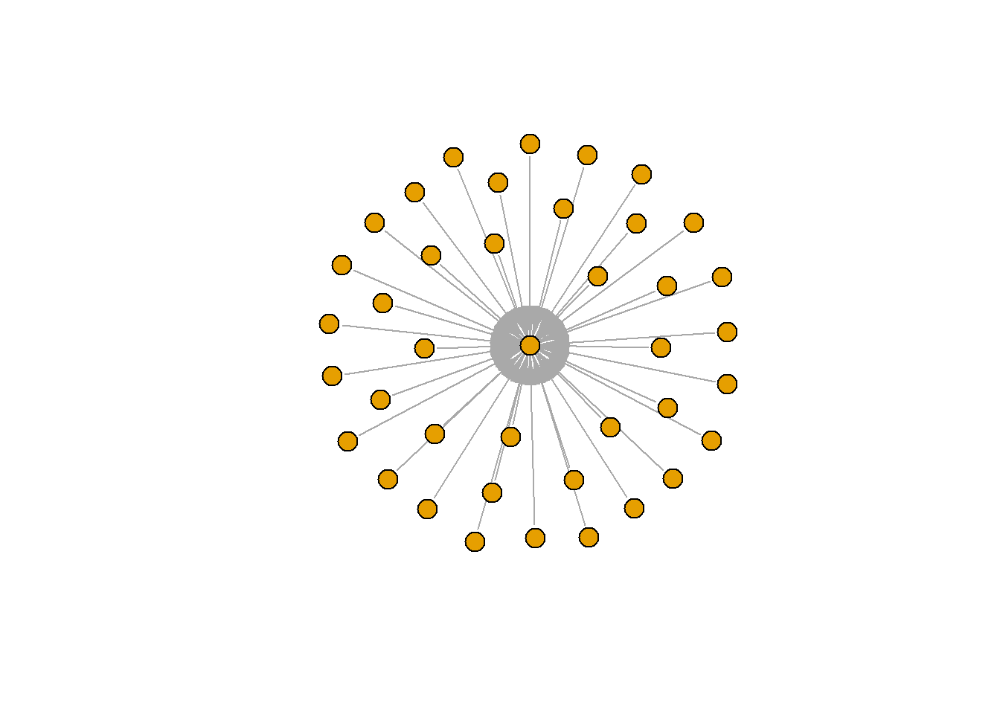
단순 성형 그래프(Simple star graph)
st <- make_star(40)
plot(st, vertex.size=10, vertex.label=NA) 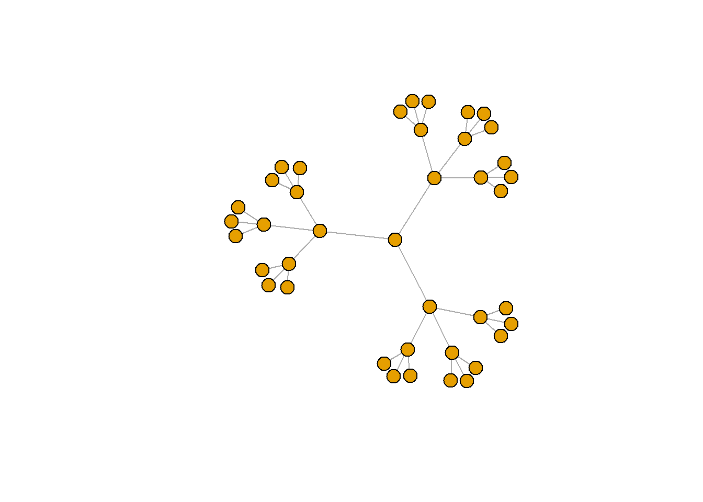
나무형 그래프(Tree graph)
tr <- make_tree(40, children = 3, mode = "undirected")
plot(tr, vertex.size=10, vertex.label=NA) 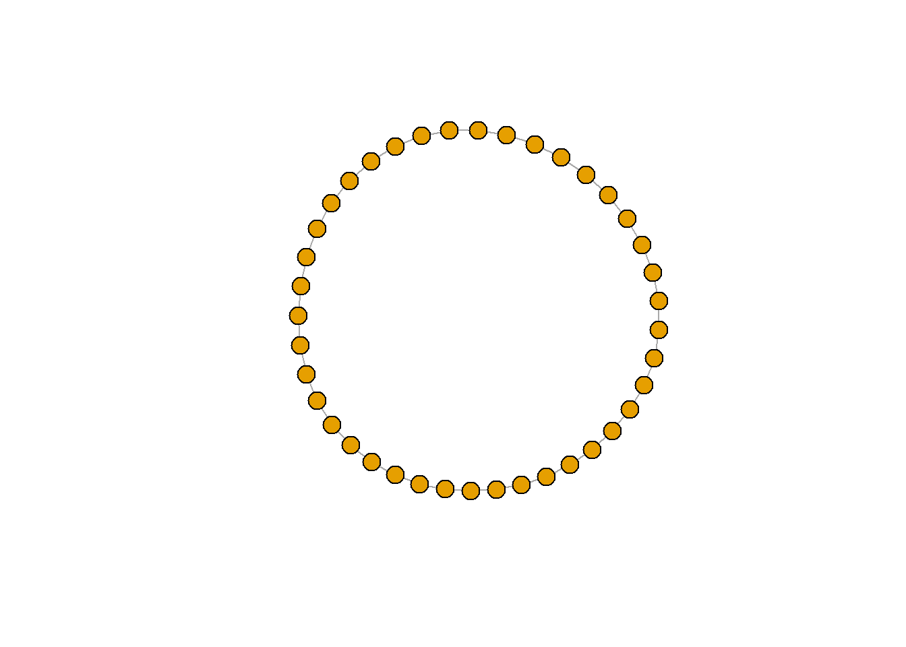
환형 그래프(Ring graph)
rn <- make_ring(40)
plot(rn, vertex.size=10, vertex.label=NA)
Erdos-Renyi random graph model
(‘n’ : 노드의 갯수, ‘m’ : 에지의 갯수).
[참고자료 : http://sanghyukchun.github.io/50/]
er <- sample_gnm(n=100, m=40)
plot(er, vertex.size=6, vertex.label=NA) 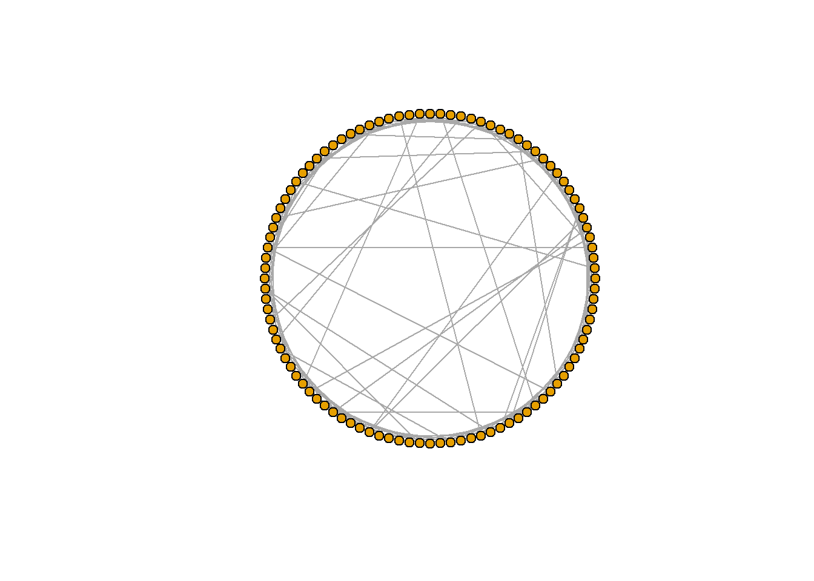
Watts-Strogatz small-world model
(dim 차원과 size 차원의 노드의 수를 갖는) lattice를 생성하고, 확률 p로 무작위로 에지를 연결한다.
에지가 연결된 이웃들은 nei이다. loops 와 다중(multiple) 에지를 허용할 수 있다.
[참고자료 : http://sanghyukchun.github.io/51/]
sw <- sample_smallworld(dim=2, size=10, nei=1, p=0.1)
plot(sw, vertex.size=6, vertex.label=NA, layout=layout_in_circle)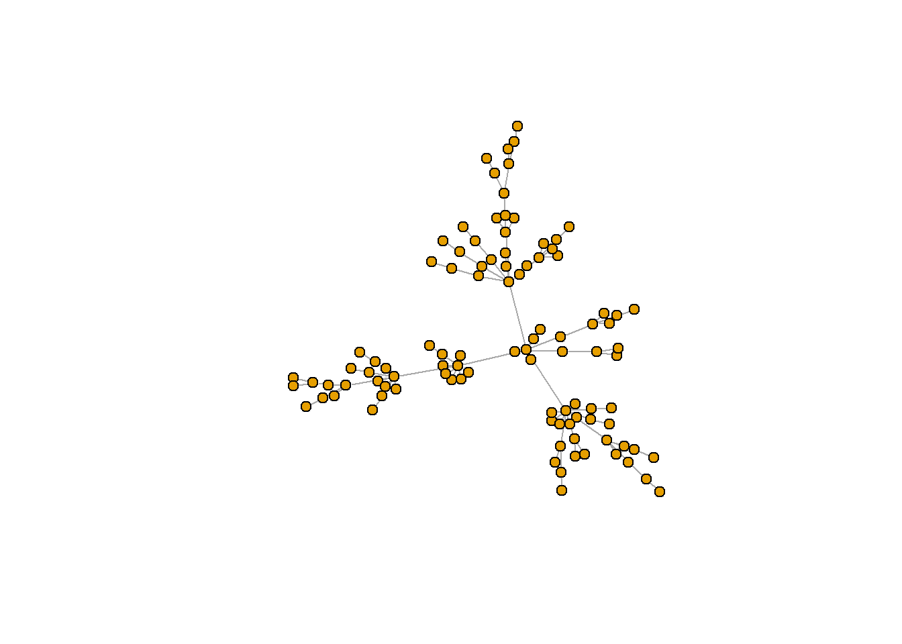
Barabasi-Albert preferential attachment model for scale-free graphs
(n : 노드의 갯수, power 제곱승 (1은 선형); m 각 시간 단계에 추가되는 에지의 갯수)
[참고자료 : http://sanghyukchun.github.io/52/]
ba <- sample_pa(n=100, power=1, m=1, directed=F)
plot(ba, vertex.size=6, vertex.label=NA)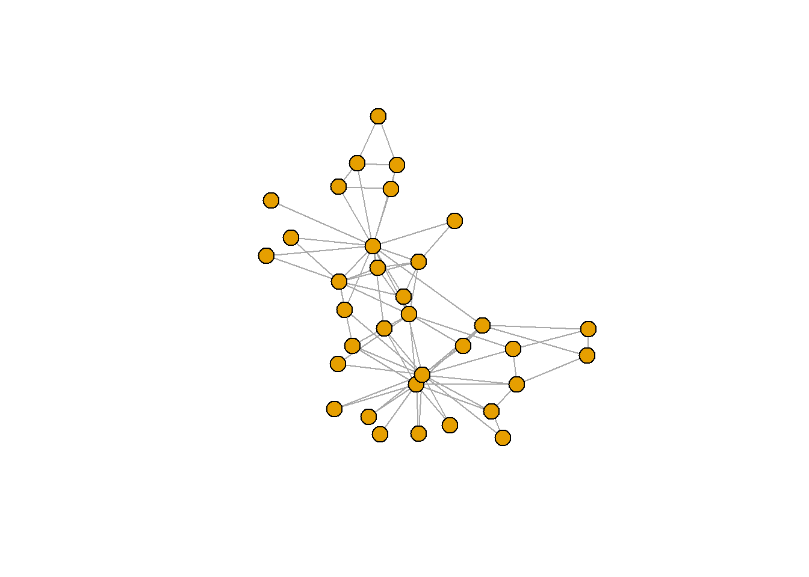
igraph 는 몇가지 주목할 만한 역사적인 그래프를 제공할 수 있다. 예를 들어,
zach <- graph("Zachary") # the Zachary carate club
plot(zach, vertex.size=10, vertex.label=NA)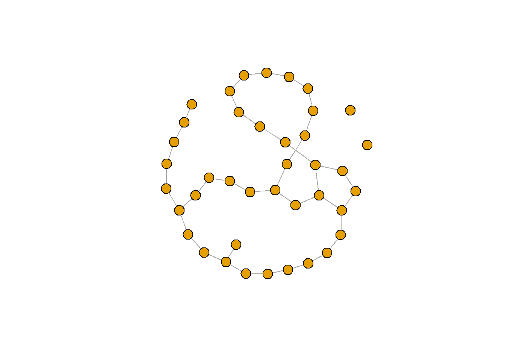
Rewiring a graph
each_edge() 은 확률 prob으로 일양분포하는 에지의 끝단을 변경하는 재연결 방법이다.
rn.rewired <- rewire(rn, each_edge(prob=0.1))
plot(rn.rewired, vertex.size=10, vertex.label=NA)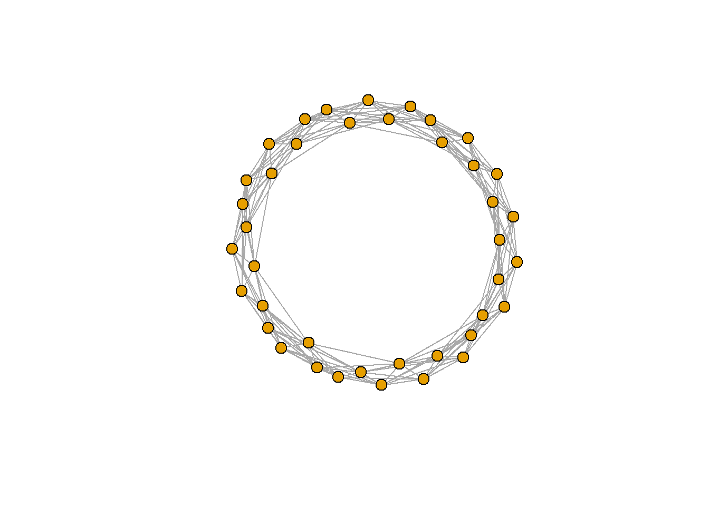
특정 거리에서 정점들을 다른 정점들과 연결하기 위한 리와이어.
rn.neigh = connect.neighborhood(rn, 5)
plot(rn.neigh, vertex.size=8, vertex.label=NA) 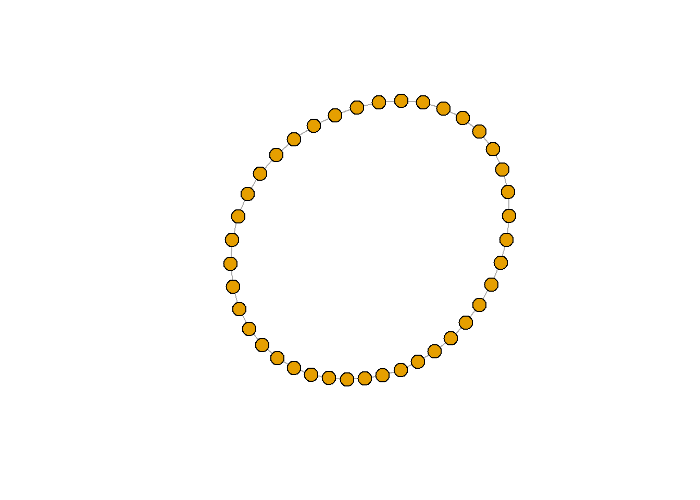
그래프의 결합(분리된 정점 집합을 가정한 상호배제 합집합(disjoint union) ) : %du%
plot(rn, vertex.size=10, vertex.label=NA)
plot(tr, vertex.size=10, vertex.label=NA)
plot(rn %du% tr, vertex.size=10, vertex.label=NA)